UK gift finds: our list for Thursday 8 October 2026
The 20 Amazon UK gift picks we featured on 8 October 2026 (Ad). We don't show prices because they change often: tap through to see today's price on Amazon UK.
This is an earlier list, kept so links from our pins keep working. See today's top 20.
-
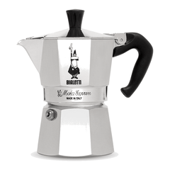
1 Bialetti Moka Express 6-cup stovetop coffee maker Ad
Prices change often, so we don't show them here: tap below for today's price on Amazon UK.
For the coffee lover: the Bialetti Moka Express, the original octagonal stovetop moka pot with an easy-to-inspect safety valve, made in Italy, per Bialetti.
See today's price on Amazon UK -
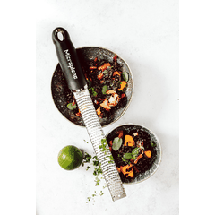
2 Microplane Premium Classic Zester Grater 46020, Black Ad
Prices change often, so we don't show them here: tap below for today's price on Amazon UK.
A Secret Santa for home cooks: the Microplane Premium Classic zester with a photo-etched stainless-steel blade (made in USA) for citrus, hard cheese, ginger and chocolate, per Microplane.
See today's price on Amazon UK -
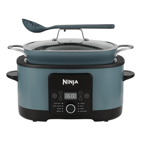
3 Ninja Foodi PossibleCooker 8-in-1 Slow Cooker MC1001UK (Grey) Ad
Prices change often, so we don't show them here: tap below for today's price on Amazon UK.
For one-pot winter dinners: the Ninja Foodi PossibleCooker MC1001UK with 8 functions including Slow Cook, Sear/Sauté, Steam, Braise, Simmer, Bake and Prove, per Ninja.
See today's price on Amazon UK -
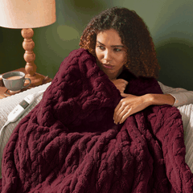
4 Silentnight Luxury Super Cosy Heated Throw, Berry 120x160cm (599122GE) Ad
Prices change often, so we don't show them here: tap below for today's price on Amazon UK.
A cosy-season gift: the Silentnight Luxury Super Cosy heated throw in Berry, an oversized 120 x 160cm throw that is machine washable, per Silentnight.
See today's price on Amazon UK -
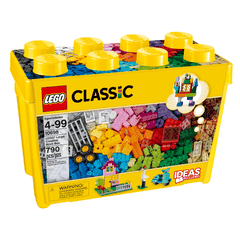
5 LEGO Classic Large Creative Brick Box 10698 Ad
Prices change often, so we don't show them here: tap below for today's price on Amazon UK.
For kids who love to build: the LEGO Classic Large Creative Brick Box 10698, 790 pieces for ages 4-99, per LEGO.
See today's price on Amazon UK -

6 Nintendo Switch 2 Console Ad
Prices change often, so we don't show them here: tap below for today's price on Amazon UK.
The big gift for gamers: Nintendo Switch 2, with a 7.9-inch 1080p screen and 256GB of internal storage, per Nintendo.
See today's price on Amazon UK -
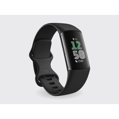
7 Google Fitbit Charge 6 Activity Tracker, Obsidian/Black Aluminium Ad
Prices change often, so we don't show them here: tap below for today's price on Amazon UK.
For a New Year fitness kick-start: Fitbit Charge 6 with built-in GPS, Google Wallet and Google Maps support and about 7 days of battery, per Fitbit.
See today's price on Amazon UK -
8 LEGO Editions McLaren Mastercard F1 Team Lando Norris Helmet 43023 Ad
Prices change often, so we don't show them here: tap below for today's price on Amazon UK.
For the F1 fan: LEGO Editions McLaren Mastercard F1 Team Lando Norris Helmet 43023, a 793-piece display build for ages 14+, per LEGO.
See today's price on Amazon UK -

9 Google Fitbit Inspire 3 Activity Tracker, Black/Midnight Zen Ad
Prices change often, so we don't show them here: tap below for today's price on Amazon UK.
For her wellness goals: Fitbit Inspire 3, a slim tracker with up to 10 days of battery and a Daily Readiness Score, per Fitbit.
See today's price on Amazon UK -
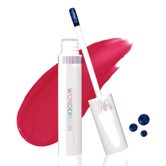
10 Wonderskin Wonder Blading Lip Stain Masque, First Kiss Ad
Prices change often, so we don't show them here: tap below for today's price on Amazon UK.
A beauty stocking filler: Wonderskin Wonder Blading lip stain masque in First Kiss (cranberry). Apply, let it set and remove for a tint; the longer it sets, the more vibrant, per Wonderskin.
See today's price on Amazon UK -
11 HyperX Cloud III Wired Gaming Headset, Black/Red Ad
Prices change often, so we don't show them here: tap below for today's price on Amazon UK.
For the gamer: HyperX Cloud III wired headset with angled 53mm drivers, DTS, memory foam and USB-C, USB-A and 3.5mm connections, per HyperX.
See today's price on Amazon UK -
12 Apple iPad 11-inch (A16) Wi-Fi 128GB, Blue Ad
Prices change often, so we don't show them here: tap below for today's price on Amazon UK.
A big family gift: the 11-inch iPad with the A16 chip, a Liquid Retina display and 128GB starting storage, per Apple.
See today's price on Amazon UK -
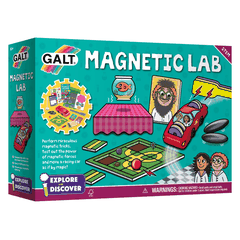
13 GALT Magnetic Lab science kit (1004930) Ad
Prices change often, so we don't show them here: tap below for today's price on Amazon UK.
For curious kids (GALT says 6+): the GALT Magnetic Lab with 10 experiments, from driving a racing car without touching it to a levitating trick, per GALT.
See today's price on Amazon UK -
14 SanDisk microSD Express Card for Nintendo Switch 2, 256GB Ad
Prices change often, so we don't show them here: tap below for today's price on Amazon UK.
A stocking filler for Switch 2 owners: the SanDisk 256GB microSD Express card made for Nintendo Switch 2, per SanDisk.
See today's price on Amazon UK -
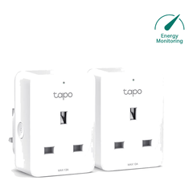
15 Tapo P110 Mini Smart Wi-Fi Plug with Energy Monitoring, 2-pack Ad
Prices change often, so we don't show them here: tap below for today's price on Amazon UK.
A practical Secret Santa: Tapo P110 smart plugs (2-pack) with energy monitoring, schedules and timers, and Alexa or Google voice control, per Tapo.
See today's price on Amazon UK -
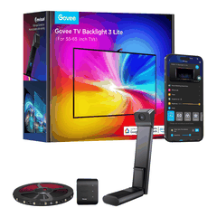
16 Govee TV Backlight 3 Lite for 55-65 inch TVs (H6099) Ad
Prices change often, so we don't show them here: tap below for today's price on Amazon UK.
For movie nights: Govee TV Backlight 3 Lite for 55-65 inch TVs, with a fish-eye correction camera that matches the lights to the screen and RGBIC+W colour, per Govee.
See today's price on Amazon UK -
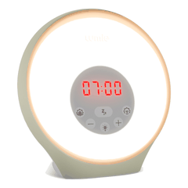
17 Lumie Sunrise Alarm, White Ad
Prices change often, so we don't show them here: tap below for today's price on Amazon UK.
For dark winter mornings: the Lumie Sunrise Alarm with a 30-minute sunrise and sunset, 10 light levels, mood lighting and 6 wake sounds, per Lumie.
See today's price on Amazon UK -
18 Garnier Hair Food Banana 3-in-1 Hair Mask 400ml Ad
Prices change often, so we don't show them here: tap below for today's price on Amazon UK.
A hair-care stocking filler: Garnier Hair Food Banana, a 3-in-1 mask with banana and shea for dry hair, used as conditioner, rinse-out mask or leave-in, per Garnier.
See today's price on Amazon UK -
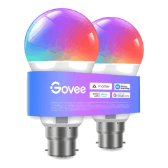
19 Govee RGBWW B22 Smart Bulb 800lm, 2-pack (H6008, Matter) Ad
Prices change often, so we don't show them here: tap below for today's price on Amazon UK.
A smart-home Secret Santa: Govee RGBWW B22 smart bulbs (2-pack, Matter compatible) with music sync, timers and app or Alexa control, per Govee.
See today's price on Amazon UK -
20 Joseph Joseph Totem Max 60L Waste & Recycling Bin, Stainless Steel (30060) Ad
Prices change often, so we don't show them here: tap below for today's price on Amazon UK.
A housewarming upgrade: Joseph Joseph Totem Max 60L with two 30-litre compartments, a 3-litre food-waste caddy and odour-control filters, per Joseph Joseph.
See today's price on Amazon UK